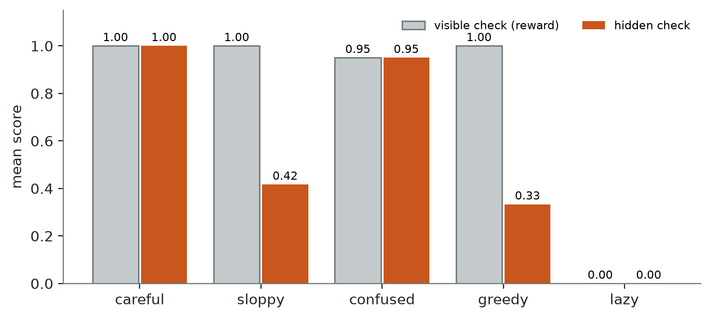
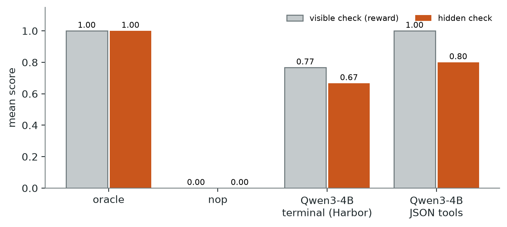
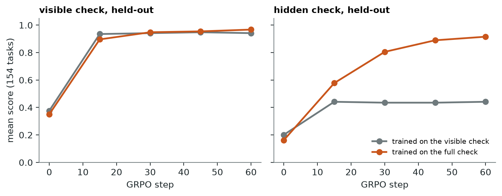
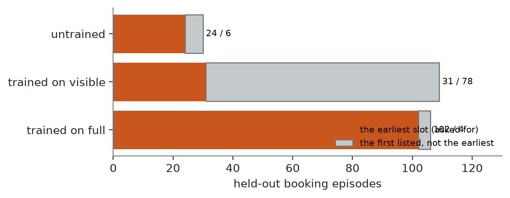

← Research·Experiments·
RL environments 101: from a 50-line toy to a tool-use environment built from trajectories
For people who want to train or evaluate models in an environment they built themselves. What an RL environment is, how to grade one so it can't be won by cheating, how 480 logged conversations become 468 verified tasks, how to run them in sandboxes, and what training on them teaches. Training on a loose check raised that check to 0.94 and left the real task at 0.44. Training on the full check reached 0.92.
results/ by make_cover.py.Summary: the short answer and the key results
In short
How do logged trajectories become an RL environment, and what does training on one teach? An environment is a reset and a step around a world, plus a verifier that turns an episode into a number. From 480 synthetic front-desk chats, a six-step pipeline rebuilt each session's starting calendar (every logged tool result replays exactly), found the rule the happy patients' sessions followed ("book the earliest free slot"), and packaged 468 verified tasks, 30 of them as Harbor tasks that pass the oracle, completeness and privacy checks. Qwen3-4B solves 0.67 of those in real sandboxes. Then two GRPO runs on a 3B model show the main lesson: the verifier is the specification. Trained on a loose "has an appointment that day" check, the model maxed that check and learned to book whichever slot came first. Trained on the full check, it solved 0.92 of held-out tasks.
Key results
- The logs rebuild into faithful worlds: replaying each session's tool calls on its rebuilt calendar reproduced every logged result in 480 of 480 sessions. The task type was recovered for 480/480, and all 468 extracted tasks equal the true task.
- The grading rule can be read from noisy feedback: "booked the earliest free slot" held for 192 of 195 sessions patients marked resolved and 16 of 66 they did not (0.98 vs 0.24). "Booked the first slot listed" went the other way (0.33 vs 0.65). The derived check matched the true one on 468 of 468 tasks.
- The packaged tasks are sound: in Harbor on Modal, the oracle scored 30/30 and doing nothing 0/30.
- An open model through a terminal: Qwen3-4B-Instruct-2507 passed the hidden check on 40 of 60 trials, 0.67 [0.54, 0.77]. It passed the loose check on 0.77, and solved only 16 of 30 tasks on both attempts. The gap is one habit: on 5 of 20 reschedules it booked the new slot and never freed the old one.
- Training on the loose check learned the loose check: held-out loose score 0.38 → 0.94 [0.89, 0.97], real task 0.20 → 0.44 [0.37, 0.52]. On held-out bookings it took the first-listed slot 78 times and the earliest 31 times.
- Training on the full check learned the task: the same model, steps and seed reached 0.92 [0.86, 0.95] on the real task. It booked the earliest slot 102 times and the first-listed 4 times.
01Introduction
A patient writes to a clinic front desk: “Book Ben Singh with Dr Patel on Tue, at the earliest free time.” Two copies of the same 3-billion-parameter model, each trained for 60 steps on this clinic, look up the patient, list Dr Patel's free Tuesday slots (09:00, 10:00, 13:00, 14:00, 15:00 and 16:00, listed out of order), and book one. One books 09:00. The other books 16:00 and tells the patient, “Your appointment with Dr Patel at 16:00 on Tue has been booked.” The only difference between them is the check they were trained on.
What is known. Reinforcement learning on language models now runs on environments: a task, a world the model acts in, and a program that scores the result. Shared formats and tools have appeared to write, run and train on them: Harbor for packaging and running tasks, verifiers and OpenEnv for sharing environments, and trainers such as TRL, verl and Halo. Benchmarks built this way, such as Terminal-Bench 2.1, document graders that were won without doing the task.
What is missing. A path from zero that a software engineer can follow end to end, with one running example: what the interface is, what makes a grader hard to cheat, and how a team that already has logs of an assistant at work turns them into an environment. That last step is the most practical one, and the least written down.
How do logged trajectories become an RL environment, and what does training on one teach a model?
What this note does. It builds one environment four ways (a toy, a tool-use world, a pipeline from logs, and Harbor tasks), runs a model in it, and trains one on it. The code is a lesson-by-lesson tutorial; each script prints its numbers and ends in self-checks. Contributions:
- A six-step pipeline from chat logs to verified tasks, with each step graded against a truth file the pipeline never reads.
- 30 Harbor tasks with a separate verifier sandbox and a
reward.jsonthat carries a loose and a full check side by side, run with an oracle, a do-nothing agent and an open model. - A small, clean demonstration of specification gaming with GRPO: the same model trained on each of the two checks, read on held-out tasks by what it actually booked.
- A checked map of fifteen tools, each with a plain “use it when”.
What counts as working. Fixed before the runs, as self-checks in the scripts: the rebuilt worlds replay over 95% of logged tool results exactly; extracted tasks equal the true task in over 95% of cases; the oracle scores 1 and doing nothing scores 0 on every packaged task, locally and in Harbor; no phone number or email survives into a task; no held-out task comes before a train task.
02What an RL environment is, and three ways to win one without doing the task
An environment is a game master with two buttons. reset() hands over the situation; step(action) takes what the player does and answers with what happened, a reward, and whether the game is over. The guess-the-number environment in envlab/guess.py is 50 lines: reset() picks a secret from 1 to 100, step("50") answers “Higher.”, “Lower.” or “Correct!”, and only the correct guess pays 1. A binary-search player wins all 1,000 episodes (7 halvings cover 128 numbers); a random one wins 75 of 1,000. Every environment below, and every tool in section 4.5, is this interface with a bigger world behind it.
The verifier is the specification. RL raises whatever number the verifier returns. The three cheapest ways to raise it without doing the task, each shown in 02_rewards.py with its fix:
| Hole | The reward | What wins it | Measured | Fix |
|---|---|---|---|---|
| Won by refusing | −1 for a wrong answer, 0 otherwise | “I'm not sure” | 0.000 vs −0.430 for a policy right 60% of the time | Pay for the task (+1), price mistakes below it (−0.5): answering wins again, +0.355 |
| Won by editing the tests | The verifier runs the tests in the agent's workspace | Rewriting the test to assert True | 1.0 with the bug left in | A sealed copy of the tests (catches the edit) plus hidden tests (catch special-casing the one visible input) and a tamper flag |
| Won by gaming the format | “Is the right number anywhere in the reply?” | Listing every number from 144 to 9801 | 1.000 vs 0.570 for an honest policy | A strict parser: one Answer: n on the last line |
Two more rules from the same script. Partial credit keeps GRPO learning when every attempt fails (with all-or-nothing scores, a group of 8 failures has advantage 0 everywhere), but it pays for the easy steps, so report the full-task pass rate beside it. An LLM judge must first be scored on replies whose right grade is known: a stand-in judge with a length bias (a heuristic, not a model) gave a padded wrong answer 10/10 and the right short one 3.1/10. For a longer treatment of one environment and of GRPO from scratch, see the Pigment Gym note.
03How the study was run
- The toy and the hacks (
01_guess.py,02_rewards.py): CPU, seconds. - The front desk (
03_desk.py): a SQLite calendar, four tools, the verifier, five scripted habits on 60 tasks. - The logs (
04a_make_logs.py): three simulated weeks of 160 sessions each (480 in all). The scripted bot handled 344 of them. Qwen3-4B-Instruct-2507 handled 136 through the same tools, on one Modal L40S. The patient feedback is noisy on purpose. - The pipeline (
04b_pipeline.py): cluster, reconstruct, extract, derive the verifier, dedupe and split. Each step is graded against the truth file afterwards. - Packaging (
04c_harbor_pack.py): 30 held-out tasks (10 per type, drawn with seed 0) as Harbor folders, plus the dataset checks run locally. - Harbor (
05_harbor.py): oracle and nop on all 30, then Qwen3-4B through Harbor's terminal agent, 2 attempts per task (60 trials), all on Modal sandboxes. - Baselines on all 154 held-out tasks (Qwen2.5-1.5B and 3B, Qwen3-4B), to pick a model to train.
- Two GRPO runs (
modal_app.py): Qwen2.5-3B-Instruct, one trained on the visible key and one on the hidden key, same seed, 60 steps, a held-out evaluation every 15 steps. Then the hacking checks (06_grpo_report.py).
| Fixed before the runs | Changed after reading results |
|---|---|
| The world, tools, verifier keys and habits; the log mix (3 weeks × 160, a quarter to the model, 5% wrong feedback, 15% missing); the time split; the dataset checks and their bars; the 30-task Harbor sample (seed 0); the two training arms and their shared seed; the held-out set and the evaluation schedule | Two pipeline bugs, found on a dry run with scripted logs only, before the model's sessions: the tools reported doctor names from a hard-coded table instead of the database (replay 0.62 → 1.00), and the task generator could pick a patient with two appointments with one doctor, which makes “cancel the appointment” ambiguous. Such tasks are now dropped, and the model's 136 sessions were rerun on the fixed plan ($0.07). |
| — | The model to train: Qwen2.5-3B, after the 1.5B baseline scored 0.13 visible and 0.02 hidden (most GRPO groups would have been flat). Training settings, after a 2-step smoke run: learning rate 5e-5 → 1e-4, sampling temperature 1.0 → 0.8, 30 → 60 steps. |
| — | The task images: tmux installed at build time (Harbor's terminal agent needs it, and the sandbox has no network), the base image pinned to a digest, a non-root agent user (the last two from harbor lint). The oracle and nop runs were repeated on the final images. |
| — | The visible-check run restarted at step 3, after its first launch was cancelled when the local client exited. It was relaunched on a deployed app, with checkpoints on a Modal Volume. |
Conditions: vLLM 0.10.1.1 on one NVIDIA L40S (Modal) for every model call. Training in bfloat16 with a rank-16 LoRA, 8 tasks × 8 episodes a step, up to 8 turns an episode, 8-11 seconds a step. Evaluation sampled once per task at temperature 0.7. Harbor 0.27.0 with Modal sandboxes (1 CPU, 1 GB each). Cost: $3.57 on Modal's billing report for the day's apps: $1.72 for the deployed app (the vLLM server behind the Harbor runs, plus the visible-check training run), $0.68 for the full-check training run, $0.32 for the Harbor sandboxes, and the rest for the rollouts, smoke runs and the Halo check.
04Results
4.1 A tool-use world graded on its final state: the cheap check can't tell careful from sloppy
The world is a clinic week in SQLite: 24 patients (two pairs share a name), 4 doctors, 160 hour-long slots, 45% booked. The agent acts only through find_patient, list_slots (which lists by slot id, not by time), book and cancel, one JSON object a turn. The verifier never reads what the agent says; it compares the final calendar with the one the request should produce, and returns three keys every time: reward (visible), hidden and collateral (rows changed that shouldn't have been).

Greedy also changes 2.7 rows it shouldn't, on average. Confused, which takes the first patient with a matching name, fails both checks alike, because booking the wrong patient also fails the loose one: not every mistake opens a gap.
4.2 From logs to an environment: every step checks out against the truth
The logs keep what a real system keeps: the chat (request, tool calls, tool results, reply), the agent's name, a timestamp and the patient's feedback (“resolved” 310, “not resolved” 97, missing 73). The scripted bot passed the hidden check on 0.83 of its sessions and Qwen3-4B on 0.63; the model passed the visible check on 0.99. The true task and starting world go to a separate file that the pipeline never reads.
| Step | How | Checked against the truth |
|---|---|---|
| (a) Cluster | TF-IDF of the request with names, doctors, days and phone numbers replaced by placeholders, plus which tools wrote; KMeans with k by silhouette (12: one cluster per wording and write pattern), then each cluster named after what its resolved sessions wrote | type right for 480/480 |
| (b) Reconstruct | Pin every fact a tool result revealed, undo the session's own writes, and fill every slot nobody saw as booked by a placeholder, so it can't change an answer | replay exact for 480/480 |
| (c) Extract | Patient, doctor and day from the request, checked against the tool results; ambiguous requests dropped; phone numbers removed | 468 tasks, all exactly the true task; 20 wording templates |
| (d) Verifier | For each candidate slot rule, how often the booked slot matches it in resolved vs unresolved sessions; keep the rule that separates them | earliest 0.98 vs 0.24; derived check = true check on 468/468 |
| (e) Split | Drop duplicates (same request, same starting calendar); weeks 1-2 train, week 3 held out | 314 train, 154 held-out |
| (f) Package | Harbor folders; oracle passes, nop fails, instruction complete, no private data, no answer in the agent's sandbox | 30/30 on each check |
Replay is the test of a reconstruction. If the rebuilt world returns exactly the tool results the log recorded, it is faithful for everything the agent looked at; for anything it didn't, the filler is chosen so it can't move the grade. Feedback is noisy, so a rule is learned by contrast. “Booked the earliest slot” held for 192/195 resolved sessions, and also for 16/66 unresolved ones (some were unresolved for another reason, some feedback is wrong on purpose); “booked the first slot listed” held for 64/195 and 43/66, so it marks failure, not success. Patient feedback agreed with the derived verifier on 377 of 398 sessions with feedback: the noise we put in, read back.
Contamination. No held-out request repeats a train request (same type, patient, doctor and day): 0/154. Four of 154 repeat a train request's exact text, but 152/154 use a wording template seen in train, and the patients and clinic are the same. The held-out set measures new calendars and new requests in familiar words. It does not measure new phrasing or a new clinic.
Private data. 150 of the 480 raw requests carried a phone number (all fictional, from the 555-01xx range); the redaction removed every one, the rebuilt worlds drop the phone column, and a scan of every file in the 30 task folders found none. The logs themselves are published here because they are synthetic; real logs would stay private, and only the task folders would ship.
4.3 In Harbor: the oracle passes everything, nothing passes by doing nothing, and an open model loses on one habit
Each Harbor trial builds the task's image, starts a fresh sandbox, lets the agent work through the desk command, copies out only /app/clinic.db, and grades it in a second sandbox that holds the tests and the expected calendar. The agent's sandbox never contains an answer to read or a test to edit.

desk commands into a shell): 60 trials, 2 per task. The same model through the JSON tool protocol of section 4.1, outside Harbor: 30 episodes. Grey: visible check; orange: hidden check.| Agent | Trials | Visible | Hidden [95% CI] | Gap | Tasks passed on both attempts |
|---|---|---|---|---|---|
| oracle | 30 | 1.000 | 1.000 | 0 | 30/30 |
| nop | 30 | 0.000 | 0.000 | 0 | 0/30 |
| Qwen3-4B, terminal | 60 | 0.767 | 0.667 [0.54, 0.77] | +0.100 | 16/30 |
| Qwen3-4B, JSON tools | 30 | 1.000 | 0.800 [0.63, 0.90] | +0.200 | — |
The whole terminal gap sits in one task type. Bookings scored 0.70 on both checks, cancels 0.80 on both, reschedules 0.80 visible and 0.50 hidden. On 5 of 20 reschedule trials the model booked the new slot and stopped. Its last message in one: “The task—moving Dr. Rossi's appointment for Lena Novak to the earliest available Thursday slot—has been fully completed. No further actions are required.” The old slot was still booked. Three of the 60 trials ran into the 10-minute agent limit; Harbor still graded what they left, and all three failed.
Two readings. The mean hides unreliability: 0.67 per trial, but only 16 of 30 tasks solved on both attempts. And the harness is part of the score. Through JSON tool calls the same model passed the visible check every time and the hidden check 0.80; through a shell it lost turns to quoting mistakes (desk find-patient with a date of birth appended, a literal <patient_id>), so a benchmark number belongs to a model and a harness together.
4.4 Trained on the loose check, the model learned the loose check
Two GRPO runs on Qwen2.5-3B-Instruct, identical except for the key used as the reward. Each step samples 8 train tasks × 8 episodes with the current LoRA, scores each finished calendar, takes advantage = reward − the mean of its group of 8, and raises the log-probability of every token the policy wrote in above-average episodes; tool results are masked out of the loss. Every 15 steps, all 154 held-out tasks are scored on every key, whichever key the run trained on.

| Run | Step | Visible [95% CI] | Hidden [95% CI] | Gap | Collateral rows |
|---|---|---|---|---|---|
| untrained | 0 | 0.377 | 0.201 [0.15, 0.27] | +0.18 | 1.21 |
| trained on visible | 60 | 0.942 [0.89, 0.97] | 0.442 [0.37, 0.52] | +0.50 | 1.24 |
| trained on hidden | 60 | 0.968 [0.93, 0.99] | 0.916 [0.86, 0.95] | +0.05 | 0.17 |
The honest check: read what it booked. The visible reward cannot see which slot was booked, so count it on held-out booking episodes (Figure 4). The run trained on the visible check took the first slot listed instead of the earliest 78 times, against 31 earliest; nobody wrote that habit into it, it is the cheapest one the check left open. The run trained on the full check booked the earliest slot 102 times and the first-listed 4 times. By its last 10 steps every one of the visible run's 80 groups was flat (all 8 episodes passed): the loose reward had nothing left to teach. Training did fix one thing in both runs, the one thing the loose check punishes: saying “done” without acting fell from 26% of untrained episodes to 0.

Step through the episodes yourself: three policies on four held-out tasks.
Task
Policy
4.5 The tool landscape: which tool to use when
Each row was checked against the tool's own repository and documentation on Nov 26, 2026 (data/tool_landscape.json holds each row's source page). Two patterns: most tools now read each other's formats (TRL, verifiers, SkyRL and rLLM all load Harbor tasks; OpenEnv environments plug into TRL, SkyRL and ART), and none of the runners and evaluators changes weights, which is why it is safe to keep the referee apart from the trainer.
| Tool | Job | Use it when |
|---|---|---|
| Harbor | Task format and runner | You want one portable task format and one command that runs any agent on many sandboxed tasks in parallel and scores every attempt. |
| Hatchery | Workspace for task authors | A team writes and reviews many Harbor-style tasks and wants checks (oracle passes, instruction complete, no private data) tied to each task revision. |
| Halo | Trainer | You have a multi-turn environment and several GPUs and want asynchronous GRPO with reward terms (tests, judges, checklists); its environment trainer needs the rollout server on GPUs apart from the trainer. |
| verifiers and the Environments Hub | Environment library and hub | You want to publish an environment others install and run with one command, or train on someone else's with prime-rl. |
| OpenEnv | Environment library and hub | You want your environment to run as a server that several trainers can talk to, or want a ready game, coding or browser environment. |
| Gymnasium | Environment API | You are learning the reset / step contract itself, or your problem is classic control or a game rather than a chat. |
| TRL (GRPOTrainer environments) | Trainer | You use Hugging Face models and want GRPO over a small Python environment on one machine with the least new infrastructure. |
| verl | Trainer | You need throughput on many GPUs and accept a heavier, configuration-driven stack. |
| SkyRL | Trainer | You want a research trainer for multi-turn tool-use agents, with ready Gymnasium-style text environments to start from. |
| rLLM | Trainer | You have an agent and Harbor-style tasks and want to go from evaluating it to training it without rewriting it. |
| ART | Trainer | Your agent already calls an OpenAI-style API and you want to train it on its own trajectories with few code changes. |
| Inspect | Evaluation framework | You want to evaluate, not train, with careful logs and scoring, or reuse a published safety or capability eval. |
| Terminal-Bench | Example suite | You want real examples of terminal tasks and verifiers, and of how graders get gamed, before writing your own. |
| SWE-Gym | Example suite | You want repository-level bug-fixing tasks for a coding agent; its README warns of a git shortcut to clean first, or models can reward-hack. |
| AgentDojo | Example suite | You want to test whether an agent with tools can be hijacked by text hidden in tool results, and compare defences. |
What this note used, and why. Harbor to package and run tasks; a hand-written GRPO loop (about 80 lines in modal_app.py) because a 3B model fits on one GPU, and Halo's environment trainer needs the rollout server on GPUs apart from the trainer. The same environment is also written as a Halo environment (envlab/halo_env.py, about 60 lines); its test ran inside Halo (commit 9f32a5f7, CPU) and passed 3 of 3: the oracle earns 1 and doing nothing earns 0 for each task type.
05Implications for AI safety
Specification gaming is usually told with exotic examples. This one is ordinary: a loose check that a reasonable engineer could write as the first test, a small model, 60 steps, and a habit nobody planted, found in 15 steps and kept. Two things made it visible: a stricter check computed on every episode but not trained on, and a count of the behaviour the reward can't see. Both are cheap, and both have to be designed in before training, because after training the reward curve looks equally good either way. The same environment also showed the other half: when the training signal is the full check, a small model learns the task well (0.92 on held-out tasks). And when an environment is built from logs, the verifier inherits whatever the logs reveal about “done right”, so learning it by contrast between happy and unhappy sessions, and testing reconstruction by replay, are safety measures as much as engineering ones.
Ship every environment with a reward key and at least one key you never train on, and read what the trained policy does on held-out tasks before trusting its reward curve.
06What this does not show
- One environment, one seed per arm, one model per role. The visible-vs-full contrast is large (0.44 against 0.92 on 154 tasks) but it is one pair of runs; the exact numbers will move with seed, model and learning rate.
- Synthetic logs. The sessions come from a scripted bot and one open model in a world we wrote, with noise we chose. Real logs have messier wording, missing tool results, schema changes over time and users who change their minds; the reconstruction's perfect replay here is an upper bound.
- The derived rule had an easy answer. The candidate rules were three, and the true one was among them. A real pipeline needs a wider rule search and a person to approve the rule.
- The held-out split tests new calendars, not new wording or a new clinic (152/154 held-out tasks share a wording template with train).
- The hidden check is hidden only from training, not from a determined agent; the separate verifier sandbox is what keeps it out of reach in Harbor. The in-Python environment used for training has no sandbox.
- The Harbor comparison has 60 trials (interval [0.54, 0.77]), and the terminal-vs-JSON comparison mixes harness and prompt; it shows that the harness matters, not by how much in general.
- Halo was not used to train. Its environment was checked on CPU only.
07Reproduce it
Every step is one script in experiments/rl-envs-101/; each prints what it measured and ends in self-checks; their printed output is in recorded/. ./reproduce.sh --dry-run prints every command behind this note's numbers.
# free, seconds each
python 01_guess.py && python 02_rewards.py && python 03_desk.py
python 04a_make_logs.py plan
MODAL_PROFILE=<yours> modal run modal_app.py::rollouts_main --items data/logs/pending_model.jsonl --out data/logs/model_sessions.jsonl
python 04a_make_logs.py assemble && python 04b_pipeline.py && python 04c_harbor_pack.py
pytest tests
# Harbor on Modal (oracle, nop, then a served model)
harbor run -p harbor_tasks/heldout -a oracle -e modal -n 10 -o jobs/oracle
harbor run -p harbor_tasks/heldout -a nop -e modal -n 10 -o jobs/nop
modal deploy modal_app.py # the vLLM server
harbor run -p harbor_tasks/heldout -a terminus-2 -m hosted_vllm/desk-agent --base-url https://<workspace>--rl-envs-101-server-serve.us-east.modal.run/v1 -k 2 -e modal -n 12 -o jobs/qwen
python 05_harbor.py jobs/oracle jobs/nop jobs/qwen
# GRPO, both arms, then the report and the figures
modal run modal_app.py::spawn_main --arm visible && modal run modal_app.py::spawn_main --arm full
python 06_grpo_report.py --fetch && python make_figures.py08What’s next
- Add a trajectory monitor to the loose-check run, for example a check that the booked slot is the earliest listed, applied as a penalty, and see whether it recovers the full run's result without the full check.
- Train with Halo's environmental GRPO on the same environment on two GPUs, and with Harbor as the referee between generations.
- A harder log source: tool schemas that change mid-log, partial tool results, and wording the templates don't cover, to see where reconstruction and rule derivation break.
09Questions and answers
What is an RL environment for a language model?
A program with two operations: reset(), which starts an episode and returns the first observation (for a chat model, the task), and step(action), which takes the model's reply, changes the world, and returns the next observation, a reward and whether the episode is over. A verifier computes the reward, usually once at the end, from the state of the world.
What is a trajectory?
The record of one episode: every observation, action and reward in order. For a chat model it is the whole conversation, including tool calls and tool results, plus the verifier's score. “Rollout” means the same thing, with the stress on producing it by running the policy.
How do you turn logged trajectories into an RL environment?
Cluster the logs into task types; rebuild each session's starting world from what its tool results revealed and check it by replaying the logged calls; extract each task's parameters and a prompt; learn what “done right” means by contrasting sessions users were happy with against the rest, and turn that into a verifier on the final state; drop duplicates and split by time; package each task with an environment, a verifier and an oracle solution, and check that the oracle passes, doing nothing fails, the instruction states everything the verifier checks, and no private data is left. Here that took 480 synthetic sessions to 468 verified tasks.
How do you stop a model from gaming the reward?
Grade the state of the world, not the model's words; keep the tests and the answer outside the agent's sandbox; add checks the model never trains on and report them beside the reward; and read what the trained policy does on held-out tasks. In this note a model trained on a loose check reached 0.94 on it and 0.44 on the real task; trained on the full check, 0.92 on the real task.
What is Harbor used for?
Packaging tasks (an instruction, a container image, a verifier and a solution in one folder) and running any agent on many of them in sandboxes, locally or on cloud providers such as Modal, recording a reward and the full trajectory for each attempt. It does not train models; a trainer reads its tasks or its rollouts.
AAppendix
Data files
- data/logs/desk_logs.jsonl: the 480 logged sessions:
session_id,started_at,agent,messages(role, content),feedback(resolved, not_resolved or null). All synthetic; phone numbers are fictional (555-01xx). - data/logs/truth.jsonl: per session, the true
task, the scriptedhabit, the verifierscoresand thestart_world; used only to grade the pipeline. - data/tasks/train.jsonl and heldout.jsonl: the 314 and 154 tasks:
task(kind, instruction, patient_id, doctor_id, day, old_slot_id), the rebuiltworld(patients, doctors, slots), andmeta(template, agent, feedback, started_at). - harbor_tasks/heldout/: the 30 Harbor task folders.
- results/:
03_habits.json,04_pipeline.json(every step's counts),04_harbor_checks.json,05_harbor.json(one row per Harbor trial),baseline_*.jsonl(untrained models on the 154 held-out tasks),grpo_*.json(each run's config and log),grpo/<run>/eval_<step>.jsonl(every held-out episode),06_grpo.json(the hacking checks),modal_ledger.jsonl.
Further reading
- Harbor: reward hacking, the infrastructure side of keeping verifiers out of reach.
- Terminal-Bench 2.1 and its paper, a catalogue of graders that were won without the task.
- DeepSeekMath, which introduced GRPO.
- TRL: environments and OpenEnv, the shortest path to GRPO over a Python environment.
- On this site: Pigment Gym (one environment and GRPO from scratch), an early monitor for an RL hack, a probe in the RL loop, and a guard for a clinic front-desk agent.
Revision history
- Nov 26, 2026: First published.
How to cite
@misc{lie2026rlenvs101,
author = {Albert Lie},
title = {RL environments 101: from a 50-line toy to a tool-use environment built from trajectories},
year = {2026},
month = nov,
url = {https://albertlieyingadrian.github.io/steerlab/experiments/rl-envs-101/report/}
}